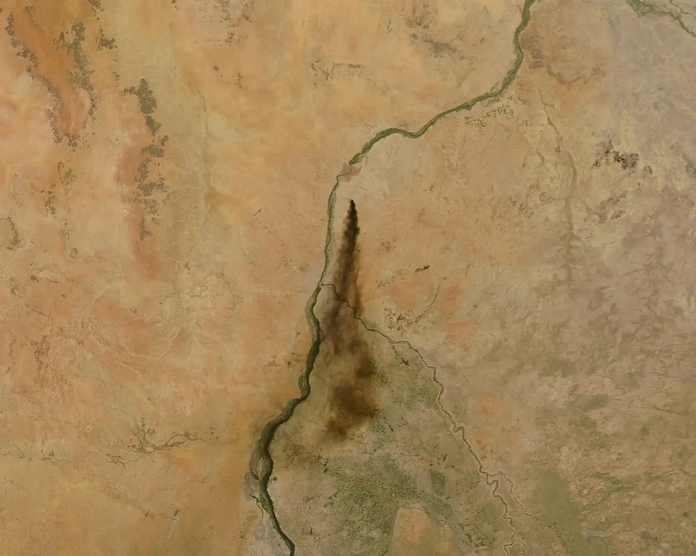
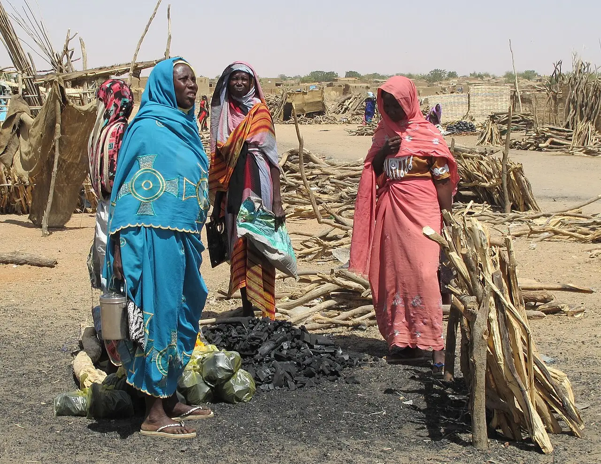

Sudan's long war
Since 15 April 2023, fighting between Sudan's army and the paramilitary Rapid Support Forces has killed at least 59,000 people by one count, and possibly far more, and driven about 13 million from their homes. Both sides deny targeting civilians. The war now reaches into Abyei and South Sudan.
Looking for another story? See all Focus stories →

What is happening

.jpg){kind=link}
The war broke out in Khartoum on 15 April 2023, after the army and the Rapid Support Forces split over plans to fold the paramilitary into the military. The conflict monitor ACLED has recorded at least 59,000 deaths in three years and says the real toll is likely higher; in 2024 the US envoy cited estimates of up to 150,000. Both sides now use armed drones: the UN human rights office recorded more than 1,000 civilians killed by drone strikes between January and May 2026. AP via CP24 · Al Jazeera · ACLED


In Darfur, the RSF and allied militias besieged El Fasher for more than 18 months and overran it on 26 October 2025. The UN human rights office says more than 6,000 people were killed in just over three days: at least 4,400 inside the city and more than 1,600 as they fled. It says the real toll is “undoubtedly significantly higher” and that sexual violence was used systematically as a weapon of war. AP via OPB


The war crosses borders. On Monday 19 October 2026 a drone strike on Amiet Market in Abyei, an area claimed by both Sudan and South Sudan, killed at least 153 people, a local official says. South Sudan blames Sudan's army; an unnamed Sudanese officer told AP the army hit fuel tankers bound for the RSF. In November 2025 an RSF drone attack on the Heglig oil facility halted production and exports in parts of Sudan and South Sudan, where oil brings in more than 90% of government revenue. Al Jazeera · Radio Tamazuj
About 13 million people have been forced from their homes; UNHCR says 4.3 million are refugees in neighbouring countries, most in Egypt and eastern Chad. Famine was confirmed in Zamzam camp in 2024 and in El Fasher and Kadugli in 2025. In May 2026 the IPC found no area in famine but 14 areas at risk, and nearly 19.5 million people, more than 40% of the population, facing high levels of acute food insecurity. Al Jazeera · Radio Dabanga · WFP · AP via WTOP
Both sides face accusations. In January 2025 the US found that the RSF was committing genocide; in 2025 it also found that Sudan's government had used chemical weapons in 2024, which Sudan denies. The International Criminal Court says it has “concrete evidence” linking RSF leaders to recent war crimes in Darfur. UN-led talks on a ceasefire resumed in Geneva in October 2026 without either warring party at the table. AP via ClickOnDetroit · UPI · BBC via MyJoyOnline · UN News
Army chief Abdel Fattah al-Burhan rejects negotiations and says the “military option” will continue until the RSF is removed from Sudan. The RSF has repeatedly denied widespread killings in Darfur; its leader, Mohamed Hamdan Dagalo, has acknowledged abuses by his fighters but disputed their scale, and the RSF and its allies have formed a parallel government in areas they hold. The RSF did not respond to AP's request for comment on the UN's El Fasher findings. Al Jazeera · BBC via MyJoyOnline · AP via OPB · AP via ClickOnDetroit
In the daily edition: Thu 22 Oct · Wed 21 Oct · Tue 20 Oct · Mon 19 Oct
More in-depth stories, every fact sourcedSee all Focus stories →